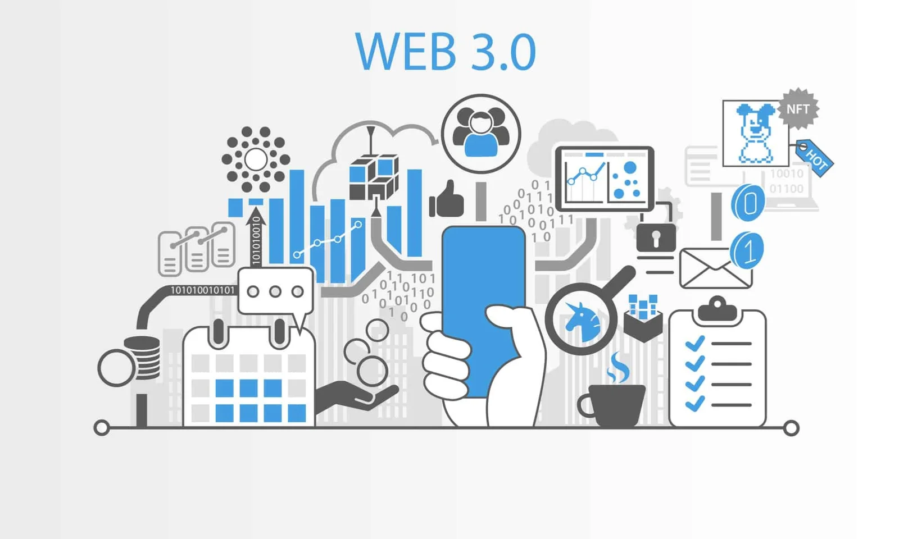

Web 3.0 — это идея для нового поколения Всемирной паутины, которая включает в себя концепции, такие, как децентрализация, блокчейн-технологии и токенизация экономики.
Web3 предполагает, что пользователи будут иметь больше контроля над своими данными, своей цифровой личностью и своими активами в интернете. Для этого они будут использовать специальные приложения, которые работают на основе смарт-контрактов — самоисполняющихся программных кодов.
С начала 90-х до примерно середины 2000-х годов мы жили в эпоху Web 1.0. Это был интернет для чтения, где пользователи могли только смотреть на статические веб-страницы — это Yahoo, AltaVista, Geocities, а также ранние версии «Яндекса», Mail.ru, «Лента.ру» и других.
С середины 2000-х годов мы перешли в эпоху Web 2.0. Это был интернет для создания контента, где пользователи стали активными участниками развития всемирной сети — это Facebook, YouTube, Twitter, Wikipedia и так далее
Web 3.0 не только предлагает новые технологии и возможности для разработчиков, но и решает различные проблемы и потребности для пользователей в разных областях жизни и бизнеса. Web3-приложения могут принести выгоды и риски во многих сферах.
